Тема сценарного тестирования уже давно раскрыта, а осознание необходимости использования TDD и BDD в той или иной мере есть почти в каждой компании. Исключением не стала и наша небольшая группа разработчиков на 1С. Однако, от момента понимания необходимости, до реального использования технологии, проходит время, и на этом пути неокрепшие умы как, например, автор этой статьи, начинают задумываться об эффективности всей этой затеи. Если вам интересно как группка смышленых ребят внедрила в своей работе что-то похожее на сценарное тестирование – добро пожаловать.
Предыстория
На рынке существуют очень мощные и развитые средства тестирования пользовательского интерфейса. Есть специальные языки описания сценариев, масса документации и методологий. Другими словами, «Есть проблема? Есть решение!».
С другой стороны, затрачиваемая энергия на решение проблемы должна как-то корреспондировать с производимой коллективом энергией в целом. А практически, если крупные компании могут позволить содержание в штате отдельных QA-специалиста(ов) и тестеров с разворачиваем процессов на всю катушку, то мелким конторам это не всегда под силу, часть функций приходится возлагать на самих себя, а сама философия процесса немного искривляется.
Итак, дано: территориально распределенная группа разработчиков на 1С до 10 человек, в среднем, до 5 активных проектов, в основном разработка кастомных решений без использования типовых продуктов 1С.
Задача: максимально эффективно внедрить процессы тестирования разработок, включая тестирование работы интерфейса и бизнес-логики. Под эффективностью понимается тот баланс, когда временные затраты на тестирование всё еще имеют смысл с точки зрения конечного результата. Допускаю, что эта грань очень субъективна, а возможно и полностью оправдывает выражение «попытка сопоставить тёплое с мягким». Каким целям сценарное тестирование служит как таковое, думаю читатель знает даже лучше, чем автор.
После исследования ряда инструментальных систем западных вендоров, а также, сценарного тестирования от 1С версии 3.0, и xUnitFor1C, складывалось впечатление, что мы пока ментально не доросли до внедрения этих технологий. Время шло, а мы всё никак не можем дорасти. При этом, нутро всё требовало и требовало хоть какого-то решения.
Подняв старые записи, был в очередной раз составлен список требований к потенциальному программному продукту:
Конечно, список далеко не полный, и в той или иной мере присутствует в других программных продуктах. Может показаться юношеским максимализмом, но только при выполнении всех этих условий в одном продукте мы видели возможным внедрение сценарного тестирования в нашей ситуации. Коллеги могут со мной не согласиться, но я придерживаюсь мнения, что одной из ключевых проблем качества и количества тестов как таковых является то, как быстро и удобно эти тесты можно делать в непрерывном режиме разработки приложения.
Прошло, наверное, еще полгода, и наконец я принял решение начать в вяло-факультативном режиме разработку очередного велосипеда-тестировщика (дальше — тестер), и вот, что из этого получилось.
Как это выглядит
В итоге родилось приложение на базе 1С, в котором пишутся и выполняются сценарные тесты для решений на базе 1С. Ежедневное использование примерно такое: тестер открыт у программиста на втором мониторе весь рабочий день. В базе учета проектов менеджер указывает обязательный набор тестов, которыми должен быть покрыт проект.
Существует также ряд стандартных, обязательных тестов, которые должны быть выполнены программистом для каждой задачи. Например, если документ вводится на основании, должен быть тест ввода на основании. Другими словами, программист знает, какие тесты должны быть созданы.
Когда пишутся тесты
На практике написание тестов в половине случаев происходит в процессе разработки (очень удобно для автоматизации рутины, когда требуется в каждом перезапуске приложения повторять одни и те же действия). В другой половине – после. Как наверняка заметил искушенный читатель, такую ситуацию сложно назвать классическим BDD.
Пример теста
Допустим, есть проект «Разработать документ Сборка комплекта». Для данного документа необходима форма списка с фильтром по складу. Общая концепция работы списков в рассматриваемом решении принята такой: если фильтр установлен, кроме отбора документов по значению фильтра, требуется, чтобы значение отбора служило значением по умолчанию при вводе нового документа из этой формы. Таким образом, если склад установлен – он должен быть автоматически установлен при вводе нового документа.
Только на первый взгляд кажется, что для такого сценария тест не нужен, однако, учитывая многообразие вариантов ввода документов поле Склад может принимать разные значения. Ведь документ может копироваться, или у пользователя в настройках по умолчанию указана другая компания, и выбранный в фильтре склад не является её организационной единицей. Так или иначе, вот как будет выглядеть тест (у нас в коллективе есть иностранцы, поэтому сам тестер написан на английском, а само рассматриваемое прикладное решение предназначено для работы американских клиентов):
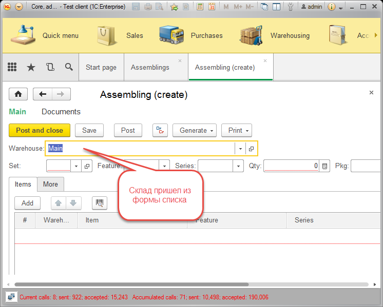
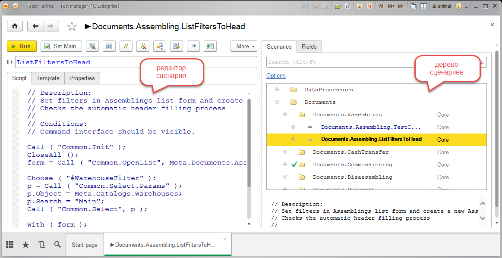
Сверху – разрабатываемое приложение, снизу – тестер, в режиме работы тонкого клиента, база тестов в облаке. Код, который вы видите, написан на языке 1С. Код сценария взаимодействует с запущенным клиентским приложением через обертки методов тестируемого приложения 1С, например, вот как выглядит метод Choose (…);
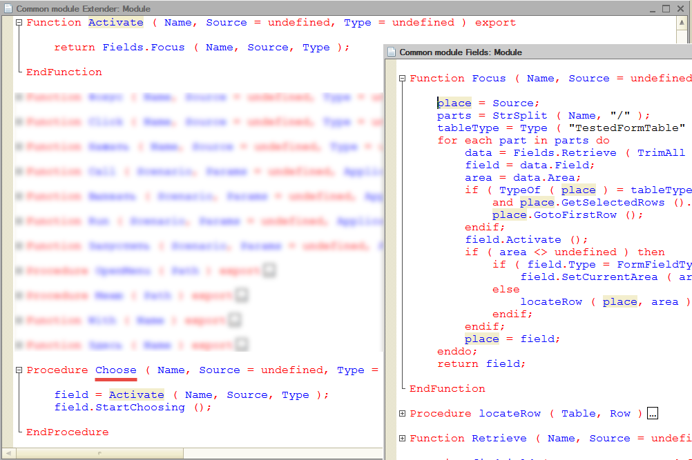
Я постарался реализовать в тестере почти все интерфейсные операции, но даже если что-то нужно специфичное, всегда можно получить объект тестируемого поля и выполнить над ним любые методы, реализованные в модели тестируемого приложения.
Перейду к более интересным сценариям.
Взаимосвязь тестов
Для того, чтобы разработать сценарий создания и проведения документа Assembling, как в предыдущем примере, мы должны иметь массу дополнительных данных: необходимый состав справочников, остатки материалов на складе, что как минимум означает наличие какого-то прихода на склад. Как я говорил ранее, мы для себя решили, что тесты должны выполняться в условиях, когда эталонной базы не существует, существует только начальный образ приложения, где есть как минимум один пользователь с административными правами, заполненные классификаторы, и значения по умолчанию для комфортной начальной работы пользователя.
Однако, писать каждый раз полный сценарий, который будет создавать все необходимые «по пути» данные будет неэффективно. Хотелось бы разработать параметризированный тест, который не только умеет что-то делать, но и принимать параметры. Например, для того, чтобы в базе создать поступление, для этого должен быть тест, который его создаст. И ничего нам не мешает сделать этот тест параметризированным, и передать в него все необходимые данные, например, какой датой сделать приход, на какой склад и какие материалы/услуги приходовать. В свою очередь, тест по созданию прихода, будет использовать тесты по созданию склада, материалов, которые будут ожидать в параметрах вид упаковки, тип, коэффициенты пересчета и прочее.
Так как наше приложение облачно и база тестов едина, каждый программист, разрабатывая некий тест, может в процессе прямого написания теста к чему-либо параметризировать его, открыв для широкого использования другими программистами.
Вот пример как тест создания Assembling готовится к поступлению:
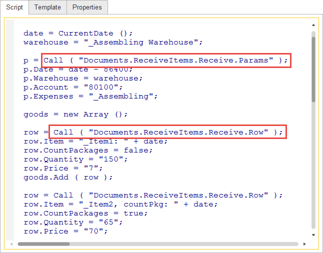
(цены, сумы и кол-ва задаются в виде строк, чтобы избежать проблем ложного срабатывания проверки теста в случае его запуска в другой локали, где разделитель триад и дробной части, например, могут отличаться)
В процессе выполнения этого теста, будет выполнен ряд других тестов, которые создадут всё необходимое для возможности протестировать Assembling как таковой. Вот примерно, что получится в результате в базе:
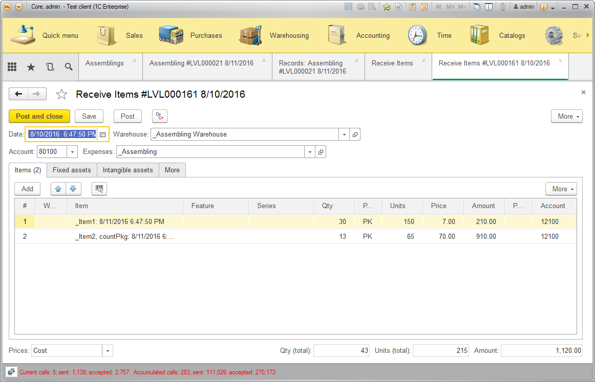
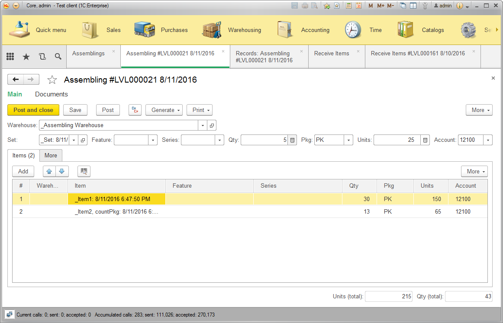
Тестирование бизнес логики
Кроме того, что все кнопки «прокликались» и поля «повыбрались», мероприятие с тестированием оставило бы глубокий рубец на сердце, если бы я не протестировал результаты работы механизмов проведения документа, и не оценил сложившуюся учетную ситуацию в базе.
Я признаться долго ломал голову, как это лучше реализовать так, чтобы и без эталонной базы, и чтобы легко и просто. Ничего лучше я не придумал, как просто выполнять проверку движений документа в связке с тестированием отчетности.
Вот пример отчета по движениям документа в тестируемом приложении:
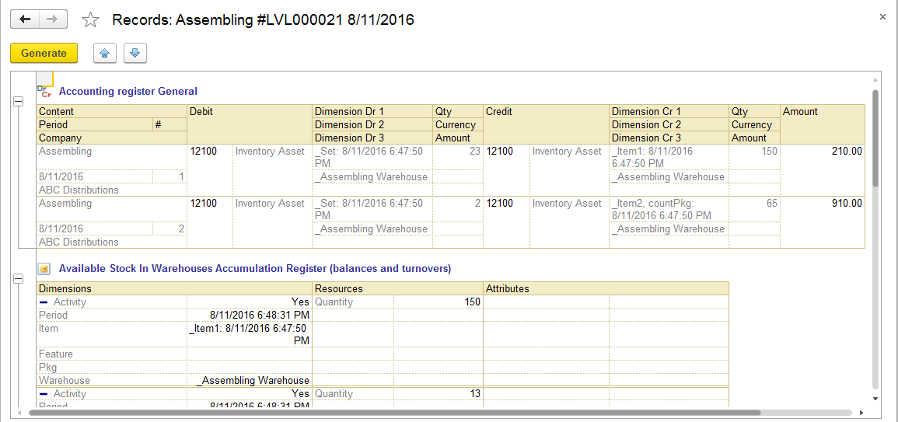
Вот как эти движения будет проверять тестер:
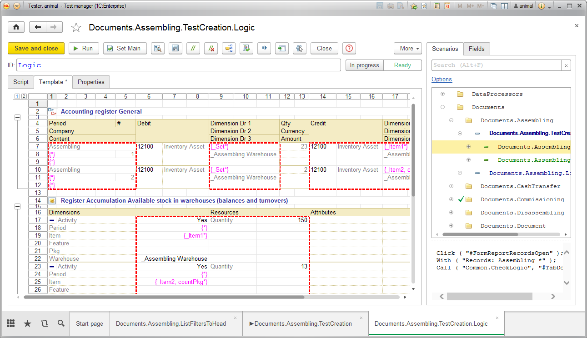
Красные области являются значимыми для проверки. Кроме областей, в тестере можно задать проверку полей по шаблону.
Типовые проверки
Нередко встает задача проверки однотипных объектов. Например, в половине случаев у форм документов есть табличная часть, и нередко допускаются программные ошибки при копировании строк, удалении первой строки, или вводу и отказу от ввода первой/последующих строк. Для этой цели, можно разработать тест-метод, который не имеет самостоятельного сценария, а используется только для вызова по месту. Это очень удобно, потому что со временем, такие тесты можно наращивать, добавляя туда другие элементы тестирования, что влечет за собой автоматическое расширение покрытия приложения за счет повсеместного использования таких тестов.
Контроль ошибок
Есть как минимум три вида ошибок, которые хотелось бы контролировать. Первый вид – это ошибки кодирования, такие как деление на ноль, обращение к несуществующему свойству или методу. Второй вид ошибок – ошибки в логике, например, при нажатии на кнопку форма должна закрыться, но этого не происходит, или при установке галочки, часть формы должна стать недоступной или невидимой. И третий вид ошибок, ошибки бизнес логики, например, при списании материала со склада, не удалось определить его наличие по базе. Все три типа ошибок могут в тестере быть отработаны. При срабатывании, тестер регистрирует исключение, записывает его в лог и может показать стек вызовов, например, так:
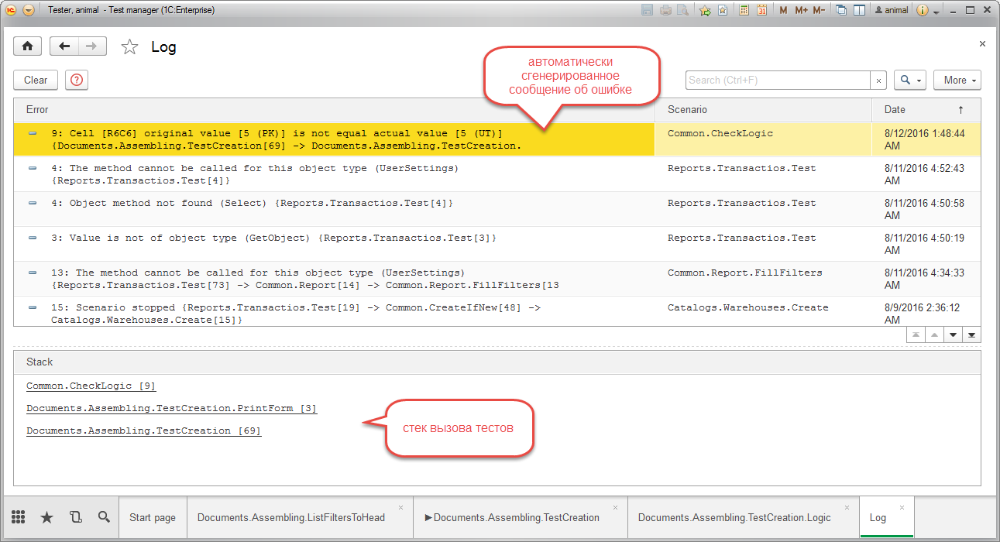
Также был реализован ряд методов по обработке ошибок бизнес логики. Например, ваш тест намеренно хочет списать больше материала и вы хотите проверить, правильно ли будет сформировано сообщение, и будет ли оно сформировано вообще.
Вот пример реализации такой проверки в одном из тестов:
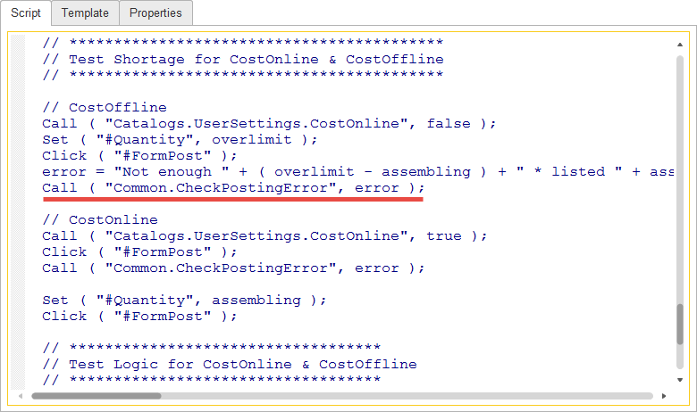
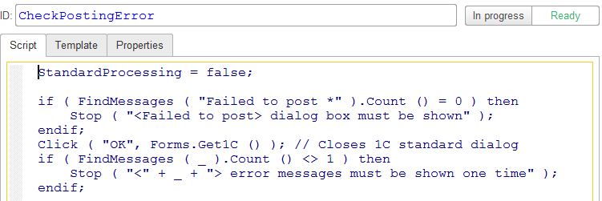
Анализ дерева элементов
Тестер умеет считывать визуальные объекты тестируемого приложения. Это удобно, а иногда и просто необходимо для написания сценария, особенно для многоязычных решений, где названия кнопок зависят от языка пользователя, и приходится использовать внутренний идентификатор для отработки интерфейса (если конечно не стоит задача проверки синтаксиса надписей на кнопках). Вот пример, как тестер представляет считанные данные:
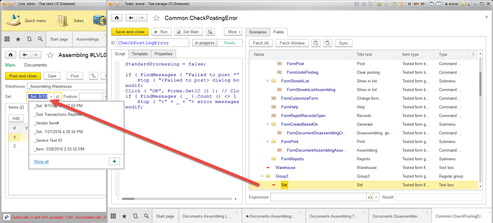
Заключение
В целом, получился небольшой велосипедик в помощь программисту 1С. В качестве положительных качеств программы, можно отметить следующее:
И конечно, многое еще не реализовано:
Тестер открытый и бесплатный, запускать желательно начиная 8.3.8, но и на 8.3.7 тоже работать будет, если включить режим совместимости. Внутри есть небольшая справка (подкачивается из инета), обёртки методов есть и на русском языке, dt-шник можно скачать отсюда. Там есть пару примеров для бухгалтерии корп 3.0.